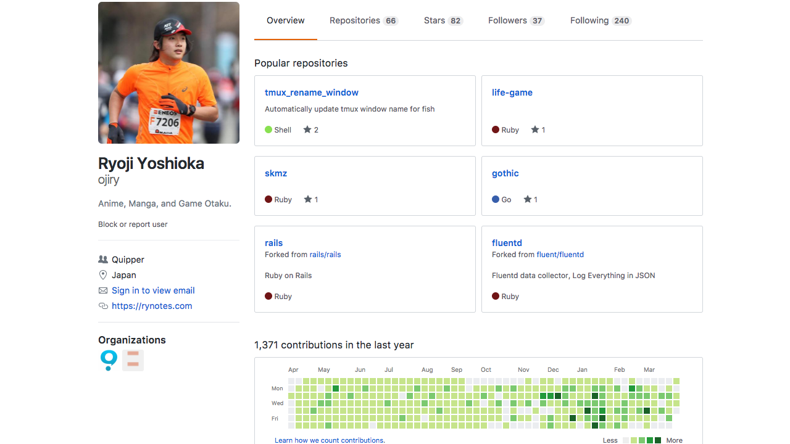

<section>

<h1>Akiba.rb #7</h1>

<h2>in Akiba code</h2>
<p>by Ryoji Yoshioka / <a href="https://github.com/ojiry" class="user-mention">@ojiry</a></p>

</section>
<section>

<h2>Thanks Akiba code 
</h2>
<p><a href="https://akibacode.blogspot.jp/">Akiba code</a> is the good place </p>

</section>
<section>

<h2>About me</h2>
<ul>
  <li>Ryoji Yoshioka (<a href="https://github.com/ojiry" class="user-mention">@ojiry</a>)</li>
  <li>Akiba.rb Organizer</li>
  <li>Rails Programer</li>
  <li>My editor is Neovim</li>
</ul>

</section>
<section>

<h3>Joined Quipper from April 1, 2017.</h3>
<p></p>

</section>
<section>

<h2>Thanks 
</h2>

</section>
